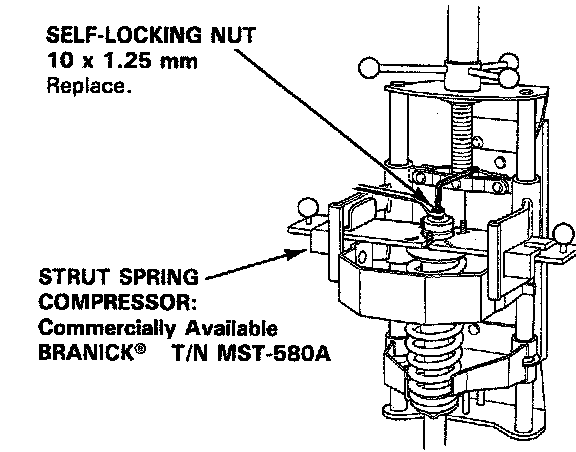
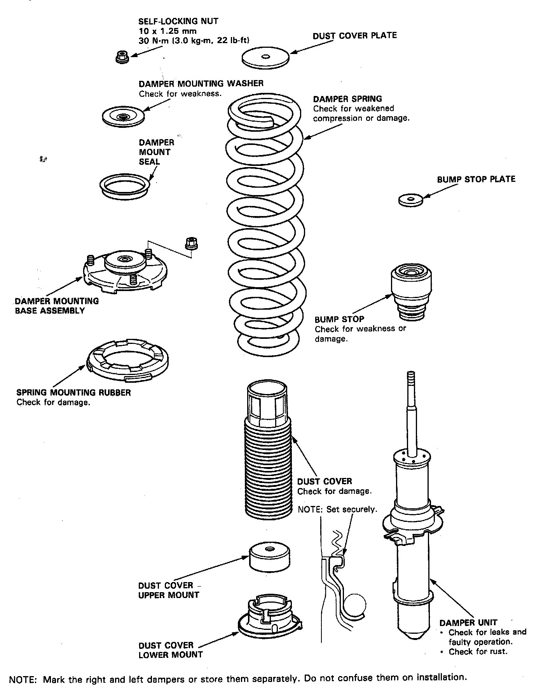
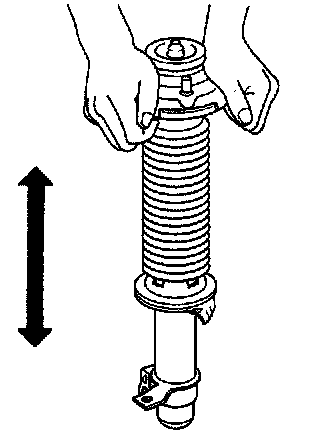

Disassembly/Inspection
Disassembly/Inspection
Disassembly
1. Compress the damper spring with the spring compressor according to the manufacturer's instructions, then remove the self-locking nut.

CAUTION: Do not compress the spring more than necessary to remove the nut.

2. Remove the spring compressor, then disassemble the damper as shown above.
Inspection:
1. Reassemble all parts, except the spring.
2. Push on the damper assembly as shown.
3. Check for smooth operation through a full stroke, both compression and extension.

NOTE: The damper should move smoothly. If it does not (no compression or no extension), the gas is leaking and the damper should be replaced.
4. Check for oil leaks, abnormal noises or binding during these tests.